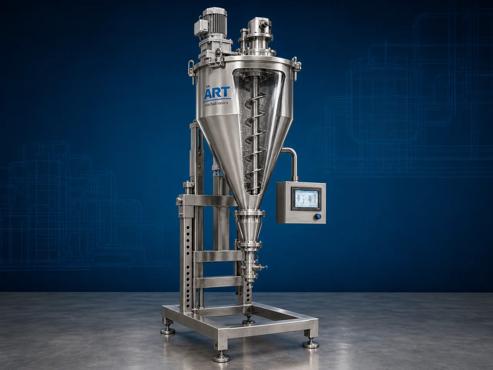

Auger Filler Packing Machine (Automatic Powder Filling & Packaging System)
An Auger Filler Packing Machine, also known as an Automatic Powder Filling Machine, Auger Filling System, or Screw Filling Machine, is an advanced industrial packaging solution designed for accurate dosing, powder filling, granule filling, pouch packaging, container filling, and automatic packaging operations using auger screw technology.

About the Auger Filler
Auger filler systems are widely used for:
- Precision powder filling
- Automatic pouch packaging
- Jar and bottle filling
- Continuous industrial packaging
- Bulk powder handling
- High-speed dosing applications
The machine improves:
- Filling accuracy
- Packaging consistency
- Production efficiency
- Product hygiene
- Labor reduction
- Packaging automation capability
Industrial auger filler machines use:
- Precision auger screw mechanisms
- Servo-driven filling systems
- PLC automation controls
- Load cell weighing technology
- Dust-controlled filling systems
to achieve accurate and repeatable powder filling operations with minimal product wastage.
Auger filler packing machines are widely used in industries such as:
Spice industries
Food processing industries
Pharmaceutical industries
Chemical industries
Pan masala & mouth freshener industries
Cosmetic industries
Nutraceutical industries
FMCG industries
where precise powder filling and hygienic packaging operations are essential.
The machine is highly suitable for:
- Spice powder filling
- Flour packaging
- Protein powder filling
- Pan masala powder packing
- Chemical powder packaging
- Pharmaceutical powder filling
ART Mechatronics offers high-performance auger filler packing machines, engineered for precision filling accuracy, continuous industrial operation, hygienic packaging, and reliable long-term performance.
Working Principle of Auger Filler Packing Machine
Powder or granule product is loaded into hopper through:
- Screw conveyors
- Vacuum conveyors
- Bag dump stations
- Manual feeding systems
Servo-driven auger screw rotates at controlled speed
Auger mechanism dispenses accurate quantity of product continuously.
Machine handles:
- Spice powders
- Flour
- Milk powder
- Pan masala powder
- Protein powder
- Chemical powders
- Pharmaceutical powders with high filling accuracy.
Product filled into: Pouches Sachets Jars Bottles Containers Bags automatically and hygienically.
System controls: Filling weight Auger speed Product flow Packaging synchronization Production speed
Auger filler integrates with: VFFS machines HFFS machines Container filling lines Packaging conveyors Complete automation systems
Types of Auger Filler Packing Machines
- 1. Semi Automatic Auger Filler
Designed for: ✔ Small and medium-scale powder filling operations
- 2. Fully Automatic Auger Filler
Suitable for: ✔ High-speed industrial packaging systems
- 3. Servo Driven Auger Filler
Uses: ✔ High-precision filling and dosing applications
- 4. Food Grade Auger Filling Machine
Designed for: ✔ Hygienic food and pharmaceutical packaging systems
- 5. Container Auger Filling Machine
Suitable for: ✔ Jar, bottle, and container filling applications
- 6. Integrated Auger Packaging System
Designed for: ✔ Complete automatic powder packaging lines
Industries Using Auger Filler Packing Machines
🌶️ Spice Industry Chilli powder, turmeric powder, and masala packaging systems 🍃 Food Processing Industry Flour, milk powder, protein powder, and ingredient filling systems 💊 Pharmaceutical Industry Medicine and nutraceutical powder filling systems ⚗️ Chemical Industry Chemical powder and fine material packaging systems 🌿 Pan Masala & Mouth Freshener Industry Powder flavor and ingredient filling systems 🧴 Cosmetic Industry Cosmetic powder packaging systems 🛒 FMCG Industry Consumer powder product packaging systems 🥤 Nutraceutical Industry Health supplement and nutrition powder filling systems
Features & Advantages
- High-precision powder filling system
- Continuous automatic packaging capability
- Servo-controlled accurate dosing operation
- Reduces product wastage and giveaway
- Hygienic dust-controlled filling system
- PLC and HMI automation control systems
- Supports multiple pouch and container formats
- Heavy-duty industrial construction
- Reliable long-term industrial performance
Technical Highlights
Machine Type: Semi automatic auger filler Fully automatic auger filler Servo auger filling system Product Handling: Powder products Fine granules Free-flow powders Filling Application: Pouches Bottles Containers Sachets Features: PLC control system Servo motor drive Touchscreen HMI Dust extraction integration Load cell weighing system Integration: VFFS machines Packaging conveyors Container filling systems Automation: Semi-automatic Fully automatic high-speed systems
Turnkey Auger Filler Packaging Solutions
ART Mechatronics offers: Complete auger filler packaging systems Powder filling and dosing solutions Packaging automation integration systems High-speed industrial packaging lines Installation & commissioning After-sales service & AMC
Why Choose Art Mechatronics
Expertise in industrial powder handling and packaging systems Customized auger filler solutions for multiple industries High-performance and durable filling technology Advanced PLC and servo automation systems Proven industrial packaging performance across sectors
Applications
Spice Processing Plants Food Processing Industries Pharmaceutical Manufacturing Units Chemical Industries FMCG Packaging Facilities Nutraceutical Manufacturing Plants
Industries that use the Auger Filler
Get pricing & specs for the Auger Filler
Share the product, target capacity, current process and plant location. These details help our engineers discuss the right machine or line configuration.
One partner, from design to start-up
ART Mechatronics designs, manufactures, installs and commissions your Auger Filler solution with regional presence in India, UAE and Thailand.